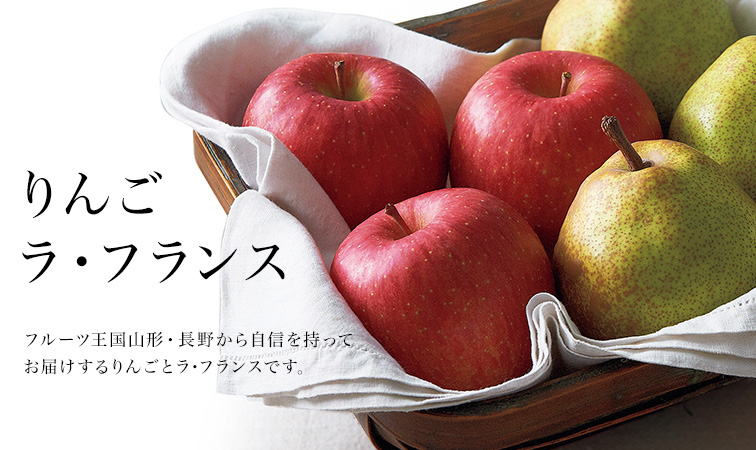
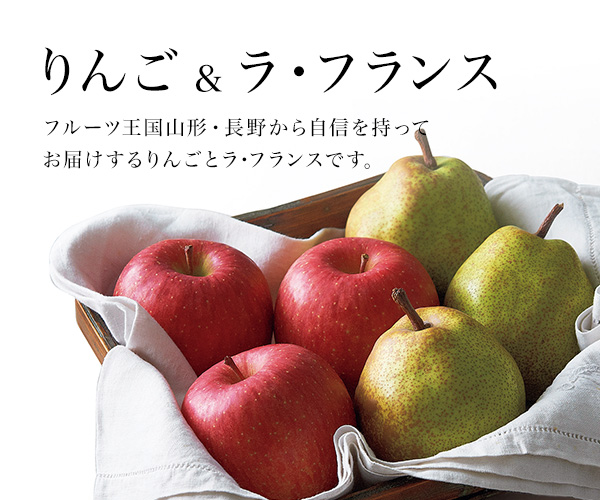

リンベルが日本一と認めた「極みの味」
山形・長野が生んだ極上のりんご＆ラ・フランス


山形県産 りんご ラ・フランスのご紹介
-
ラ・フランス
あえて実を大きくせずに、つるんとした食感を保持。とろけるようにやわらかい口あたりです。
-
蜜入り無袋ふじりんご
袋をかけずに育てることで糖度を上げました。蜜がよく入り、ジューシーな味わいです。
-
葉とらず無袋ふじりんご
葉をとらずに栽培することで、果実に糖分を蓄積させました。シャキシャキと食感がよく、旨みが凝縮しています。
-
シナノスイート
「ふじ」と「つがる」を掛け合わせてできた品種。華やかな香りと強い甘み、ほのかな酸味もあります。
-
シナノゴールド
「ゴールデンデリシャス」と「千秋」の交配種。果汁が多く、甘みの中にしっかりとした酸味を感じることができます。
-
秋映（あきばえ）
「千秋」と「つがる」の交配種。果皮が黒っぽい紅色をしています。果肉は硬め。甘みと酸味のバランスが良いです。
ギフトのハテナ？は「ギフトコンシェルジュ」で解決。お役立ち情報満載！
-

もらってうれしい秋の味覚ギフトランキング2018
秋といえば食欲、そして実りの秋ですね。おいしいものであふれるこの季節には、旬の味を贈る方も多いのではないでしょうか。
今回は、実際に秋の味覚をギフトにもらった方々へのアンケート調査をもとに、秋にうれしい味覚の贈り物についてのさまざまなランキングをご紹介します。まずは「もらってうれしい秋の味覚ランキング」と「秋の味覚と言えばコレ！ランキング」を見てみましょう。 -

もらってうれしいフルーツギフトランキング
お祝いや内祝い、季節のごあいさつなどでさまざまなギフトシーンで人気のグルメギフトですが、今回はそのなかでも人気が高いフルーツギフトについて調査しました。
「どんなフルーツギフトが喜ばれているのか？」「人気の理由は？」などを男女別ランキングでご紹介します。また、どんなシーンで贈られているかや相場などについてもご紹介します。